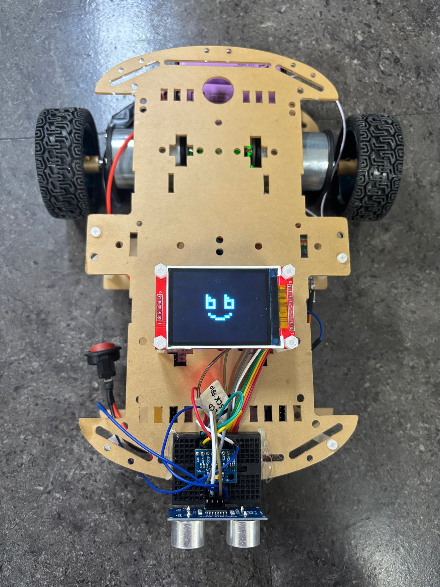
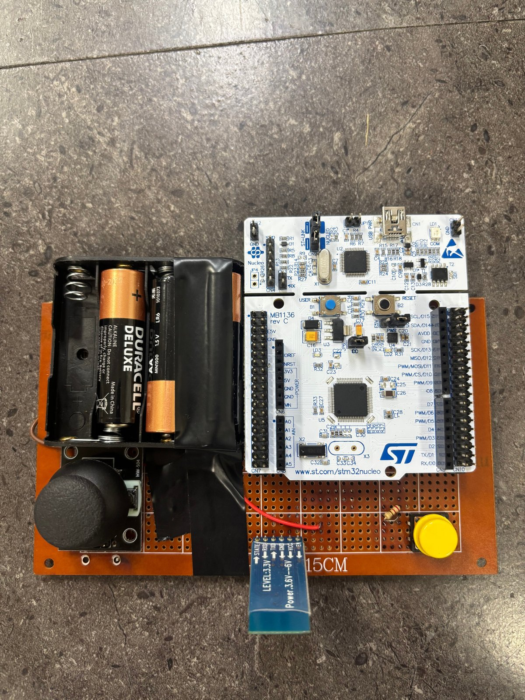

현재 RPM 계산
TIM1·TIM3를 엔코더 모드로 구동합니다. 이전 카운트와 현재 카운트의 차이를 ENCODER_PPR과 CONTROL_PERIOD_SEC로 환산해 좌우 RPM을 구합니다.
RPM = Δcount × 60counts/rev × Δt
Δt: 측정 간격 [s]Encoder · RPM · PID · PWM
조이스틱 입력을 목표 RPM으로, 실제 속도를 피드백으로.
UART로 전달받은 조이스틱 값을 이용해 좌우 모터의 속도를 제어하는 STM32 기반 RC Car입니다.
엔코더에서 현재 RPM을 계산하고, 조이스틱 값을 목표 RPM으로 치환했습니다. 목표·현재 RPM의 오차를 PID로 연산해 PWM 출력을 결정했습니다.


폐루프 속도 제어
TIM1·TIM3를 엔코더 모드로 구동합니다. 이전 카운트와 현재 카운트의 차이를 ENCODER_PPR과 CONTROL_PERIOD_SEC로 환산해 좌우 RPM을 구합니다.
조이스틱 중심값을 빼고 데드존을 적용합니다. Y축은 전후진 V, X축은 회전 W로 변환한 뒤 좌우 목표 RPM을 만들고 실제 RPM과 비교합니다.
목표 RPM과 현재 RPM의 오차에 P·I·D 연산을 적용합니다. 출력 부호로 회전 방향을 정하고, 크기를 TIM4 CH1·CH2의 PWM 비교값으로 전달합니다.
| 프로젝트 | 피드백 기준 | 나의 핵심 구현 |
|---|---|---|
| 안내견 로봇 | 초기 캘리브레이션 각도 대비 현재 기울기 | PID·PWM + 모드 판단·UART·코드 통합 |
| RC Car | 엔코더로 측정한 RPM | 목표 RPM 변환 + 좌우 모터 속도 제어 |
센서값을 제어에 필요한 물리량으로 변환하고, 목표값과 측정값을 같은 단위에서 비교하는 폐루프 제어를 구현했습니다.
직접 작성한 제어 코드
입력 변환 · 속도 측정 · PID 연산 · 모터 구동을 분리했습니다.
01 / adc_to_rpm.c
중심값 JOY_CENTER를 기준으로 입력을 정규화하고, JOY_DEADZONE 이내는 0으로 처리합니다. 데드존을 넘는 입력만 남은 범위에 비례해 RPM으로 환산합니다.
left = V + W;
right = V - W;좌우 목표값을 각각 ±MAX_RPM으로 제한해 전후진과 회전 입력을 모터 속도로 연결합니다.
02 / encoder.c
초기 카운트를 저장한 뒤 TIM1(왼쪽)·TIM3(오른쪽)의 현재 카운트를 읽습니다. 누적 카운트 대신 직전 측정과의 차이를 속도 계산에 사용합니다.
delta = (int16_t)(current - last);
RPM = delta / ENCODER_PPR
× 60 / CONTROL_PERIOD_SEC;측정과 단위 환산을 엔코더 모듈에 모아 PID에 현재 RPM을 전달합니다.
03 / pid.c
error = target − current로 오차를 구합니다. dt = 0.01초를 사용해 적분·미분을 계산하고, ki가 양수일 때 적분 누적값을 ±(999 / ki)로 제한합니다.
I += error × dt;
D = (error - previous_error) / dt;
output = clamp(P + I + D, -999, 999);적분항의 과도한 누적을 제한하고 최종 출력을 ±999로 제한했습니다. 게인은 초기화 함수의 인자로 설정합니다.
04 / motor.c
양수·음수에 따라 방향 GPIO 조합을 바꾸고, 출력의 절댓값을 PWM 비교값으로 사용합니다. 왼쪽은 TIM4 CH1, 오른쪽은 CH2에 연결합니다.
sign(speed) → direction GPIO
abs(speed) → PWM compare (≤ 1000)
motor_stop() → left = right = 0PID의 출력 제한과 별개로 모터 함수에서도 크기를 1000 이하로 제한합니다. 정지 함수는 양쪽 출력을 0으로 설정합니다.
입력 노이즈에 대응하는 데드존, 바퀴별 속도 피드백, 단계별 출력 제한, 역할별 모듈 분리.
dt = 0.01초는 PID 코드의 계산 기준입니다. 실제 호출 주기·게인·MAX_RPM·엔코더 PPR 값은 제공된 네 파일만으로 확정하지 않았습니다.